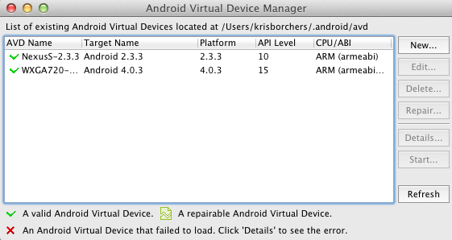

Tutorial: Android Development w/ PhoneGap/Apache Cordova in JBoss Developer Studio 5
|
Note
|
Android is not yet a tested plug-in in JBDS 5, it will be for JBDS 6 |
By the end of this tutorial, you will have:
-
Setup your development environment
-
Created your first Phonegap/Apache Cordova-based Android Application
-
Run the app on the Android emulator
-
Run the app on a real Android device (if you have one handy)
-
Leverage the PhoneGap/Apache Cordova API for native device functionality
-
Connected your app “to the cloud” with a REST endpoint
System Setup
First make sure that you have a JDK installed on your machine. JDK 1.6+ is recommended.
|
Tip
|
To find your JDK version run "java -version" from a command prompt |
Download and Unzip PhoneGap/Apache Cordova 2.0.0. Download Here
Make sure to remember where you unzipped it - you will be pulling several files into your Eclipse-based project throughout this tutorial.
Download & Install JBoss Developer Studio. Download Here
Note: This link points to JBDS Early Access of JDBS 6. The User experience should be the same
Download and Unzip the Android SDK. Download Here
Again, make sure to remember where you unzipped it.
Now install the Android (ADT) Plug-Ins into JBDS/Eclipse Click Help > Install New Software
Next, Enter this url: https://dl-ssl.google.com/android/eclipse/ in the "Work with" box and click enter
Then, Check Developer Tools
You will be prompted to restart Eclipse, please do so.
When JBDS/Eclipse restarts you should notice at least two new icons in your toolbar - the leftmost one is the Android SDK Manager. Click on the SDK Manager to see if it launches correctly, make sure that your Android OS version, for your real-world device is listed as “Installed”. This will be covered again later in this tutorial.
Project Setup - Part 1
Now that your system is setup, lets create a new Android Project by clicking File → New → Other (or Cntrl/Command N).
In the "Select a wizard" dialog, select "Android Application Project", then click "Next".

Enter the "Application Name", "Project Name" and "Package Name". We will use AndroidHelloWorld. Your setup should look similar to the screen shot below
|
Note
|
Build SDK and Minimum Required SDK should be set based on your actual Android phone - the physical device. In addition, these drop boxes are populated based on the Android SDK Manager - “installed” options. If your real-world device Android OS is not listed here, simply take the defaults for now. It is possible to switch these settings back to your real target platform, however, it might be best for you to start your project over again - just for the learning experience. |
Next, We Will keep the defaults on the "Configure Launcher Icon" dialog, so click "Next".
Then, make sure that "Blank Activity" is selected on the "Create Activity" dialog, then click "Next".
Lastly, we will keep the defaults on the "New Activity" dialog, so just click "Finish".
Project Setup - Part 2
Now that we have our shell, we need to add a few more files and directories before we can get down to coding. So hang in there.
First, under the "assets" directory we need to create a new folder called "www". The easiest way to do this is to "Right-Click" the "assets" directory and select "New Folder". Then, in the dialog box type "www" and click "Finish".
|
Tip
|
Think of "www" as the equivalent of "webapp" in a Maven project. |
Next, we will need to add the cordova-2.0.0.jar to our libs directory. This can be done by just dragging & dropping the jar file (hope you didn’t forget where you downloaded it) into Eclipse/JBDS and when prompted, select copy files and click "Ok".
Once the "cordova-2.0.0.jar" is in the "lib" directory, "Right-Click" it and select Build Path → Add to Build Path.
Next, under "www" add a "js" folder then "libs" folder so we can add the "cordova-2.0.0.js" to libs by dragging & dropping it the same way we did the .jar file.
We also need to bring in the "XML" folder with its config.xml into the "res" directory, also by dragging & dropping the same way we did for the previous to files.
Now that our folders and libraries and setup, it’s time to start creating our content.
First we need to create an "index.html". To do this, right-click the "www" folder, then choose New → Other
Then, select "HTML File" and click "Next"
Then, name it "index.html" and click "Next"
Finally, select the HTML 5 Template and click "Finish"
Open the new index.html file if isn’t already open. We are going to add in a reference to cordova-2.0.0.js into the HEAD section of the HTML.
<script type="text/javascript" charset="utf-8" src="js/libs/cordova-2.0.0.js"></script>
and a hello message in the BODY
<h1>Hello Apache Cordova</h1>
Your "index.html" file should look similar to this:
Next, we need to edit the "MainActivity.java". We need to change "extends Activity" to be "extends DroidGap"
This will initially give you a ton of red in the editor as DroidGap has not yet been imported. To import it, click on the red X beside the public class MainActivity line and you will be prompted to import DroidGap.
Then select "Import DroidGap (org.apache.cordova)"
Comment out
setContentView(…
and enter the following line:
super.loadUrl("file:///android_asset/www/index.html");
Now we need to edit the "AndroidManifest.xml"
With the file open, we need to insert the following between the "uses-sdk" and "application" tags.
<supports-screens android:largeScreens="true" android:normalScreens="true" android:smallScreens="true" android:resizeable="true" android:anyDensity="true" />
And then the following:
<uses-permission android:name="android.permission.VIBRATE" /> <uses-permission android:name="android.permission.ACCESS_COARSE_LOCATION" /> <uses-permission android:name="android.permission.ACCESS_FINE_LOCATION" /> <uses-permission android:name="android.permission.ACCESS_LOCATION_EXTRA_COMMANDS" /> <uses-permission android:name="android.permission.READ_PHONE_STATE" /> <uses-permission android:name="android.permission.INTERNET" /> <uses-permission android:name="android.permission.RECEIVE_SMS" /> <uses-permission android:name="android.permission.RECORD_AUDIO" /> <uses-permission android:name="android.permission.MODIFY_AUDIO_SETTINGS" /> <uses-permission android:name="android.permission.READ_CONTACTS" /> <uses-permission android:name="android.permission.WRITE_CONTACTS" /> <uses-permission android:name="android.permission.WRITE_EXTERNAL_STORAGE" /> <uses-permission android:name="android.permission.ACCESS_NETWORK_STATE" /> <uses-permission android:name="android.permission.GET_ACCOUNTS" /> <uses-permission android:name="android.permission.BROADCAST_STICKY" />
|
Note
|
Your current “hello world” style application does not yet require any of these permissions but it may eventually. In a production release, you should remove permissions that are not needed for security purposes. |
The result should look like the following screenshot:
Now, locate the <activity> tag and add the following attribute:
android:configChanges = "orientation|keyboardHidden"
Run Configuration Setup
Now lets setup a run configuration.
Under the JBDS/Eclipse Run menu, select Run Configurations…
Add a New Configuration for Android Application and name it "AndroidHelloWorld"
Now, select the AndroidHelloWorld project using the Browse button
And on the Target tab, select “Always prompt to pick device”
|
Tip
|
This setup will make it easier for you to switch back and forth between the Android Emulator (AVDs) and a real device plugged in via USB. |
Then select Apply.
You can now close the Run Configurations Dialog
Android SDK Manager
The Android Developer site provides a step-by-step guide to set up your environment.
Troubleshooting Fedora/Red Hat Enterprise Linux
If you have 64-bit systems, you will need to install some 32bit packages, because Android SDK is 32bit
# sudo yum install glibc.i686 glibc-devel.i686 libstdc++.i686 zlib-devel.i686 ncurses-devel.i686 libX11-devel.i686 libXrender.i686 libXrandr.i686
Setup AVD
Once the SDK has been installed, lets head back over to JBDS and create an Android Virtual Device or AVD
"Right-click" on the project and select "Run As → Android Application"
The "Android Device Chooser" dialog will appear. This will allow you to select between any real world devices that are plugged into your laptop/machine OR AVD/emulators.

If this is your first time, then most likely this dialog will be blank. If you already have and AVD created, then you can skip the setup steps.
Click on New…
And then create the new AVD, giving it a name of your choice. You should have installed an Android 2.x or 4.0 SDK through the SDK manager (as part of the step-by-step guide above).
Once an AVD has been created, you can close the Android SDK Manager and return to Android Device Chooser. Then, select "Refresh" to see the newly added AVD, make sure "Launch a new Android Virtual Device" is selected, highlight the AVD you wish to launch and select "Ok"
Launching the AVD
The "default" end-user experience is typically displayed in the emulator. You will need to manually bypass the lock screen.
Once the Android OS has fully loaded, it will then run your application. This takes a while, on a slower computer likely several minutes.
The Android Developer site has a good tutorial about setting up your "Real Device" here: http://developer.androidcom/tools/device.html
Once your device is setup, and you run the Android Device Chooser (Run As Android Application), you should see your actual device listed. Highlight it and select "OK".
|
Tip
|
If you are prompted for something called “LogCat” do say yes. It is a valuable tool for understanding what might be going wrong/right with your deployment to the real device. |
And that’s Hello World
|
Note
|
I have seen the run operation fail at times, simply try again. In one case, the LogCat message indicated that I needed to restart Eclipse just to get things running and after a quick restart (File - Restart) it was back to normal. |
Building An App
Now lets make it more interesting by adding some jQuery Mobile functionality. Right-click on "www" and select "New Other", then select "HTML File".
Name it "mobile.html" and select "Next"
Select "HTML5 jQuery Mobile Page" and select "Finish"
This will be our new "landing" page, but first we need to open MainActivity.java and change the reference to index.html to mobile.html
super.loadUrl("file:///android_asset/www/mobile.html");
Once that is complete, Save and Run
|
Note
|
This file contains references to remotely located jQuery & jQuery Mobile - it is recommended that you bring those files locally into the project for a Phonegap/Apache Cordova style application. |
If you want to load the jQuery libraries remotely, you can skip to the next section.
Otherwise, we will need to edit mobile.html by pulling in local copies of jQuery and jQuery Mobile
Download jQuery Mobile from http://jquerymobile.com/download/ and unzip
Download the uncompressed/development jQuery http://jquery.com/download/
Once downloaded and unzipped, copy both the jQuery and jQuery mobile JavaScript files into the project. They should be copied to "js/libs".
|
Note
|
For a mobile app, you want the majority of your resources, especially static ones bundled in the app. |
Then, create a "css" directory underneath "www" and drag & drop the "jquery.mobile-1.1.1.css" and the "images" into "css" as shown in the following screenshot. note: your version of jQuery/jQuery Mobile might be different
|
Note
|
It is normally recommended to use the .min versions of the JS libs, however, Eclipse often complains about those files as it cannot parse them. This can even become a bigger problem when Eclipse refuses to let you deploy (Run As) your app. Plus, these files are being bundled in your app for deployment the device so size is less important. |
Now, change the references in the mobile.html file to point to the correct location and the correct file names.
<link rel="stylesheet" href="css/jquery.mobile-1.1.1.css" /> <script type="text/javascript" src="js/libs/jquery-1.7.1.js"></script> <script type="text/javascript" src="js/libs/jquery.mobile-1.1.1.js"></script>
Also, change the alert(“Ready To Go”); to console.log
<script type="text/javascript">
$(document).on("pageinit", "#page1", function(event){
console.log("Ready To Go");
});
</script>
And in the LogCat tab you should see the console.log output.
|
Tip
|
If you receive a “[ERROR] Error initializing Cordova: Class not found” message then it is likely you forgot to add the xml/config.xml directory & file under “res” in the project. |
|
Note
|
It is much easier to perform your JavaScript debugging via Chrome, Safari or FireFox than it is using console.log and LogCat here but you can at least see that your application attempted to load the JS/HTML files if nothing else works. |
Also, make sure the device is awake and not locked, sitting on the home screen before attempting to Run As Android Application – it tends to work more often in that scenario. In Developer options (on the device), there is an option to Stay awake.
Geolocation
Time to add in some Apache Cordova Magic. First up, we will add in some "Geolocation" (where is the device on the planet).
First, add the reference to cordova.js before the script tag for on(“pageinit”…)
<script type="text/javascript" charset="utf-8" src="js/libs/cordova-2.0.0.js"></script>
Next, below the $(document).on(“pageinit”…) block add an eventlistener for "deviceready".
|
Note
|
You only want your JS to begin running after Phonegap/Apache Cordova have established the environment. |
document.addEventListener("deviceready", onDeviceReady, false);
Then add the "onDeviceReady" function that receives this event.
function onDeviceReady() {
console.log("Device Ready To Go");
console.log("Asking for geo location");
navigator.geolocation.getCurrentPosition(onGeoSuccess, onGeoError);
} // onDeviceReady
Notice that the getCurrentPosition() call above has two arguments.
-
What function to call when things go well.
-
What function to call when things go poorly.
We will need to add those two functions into our overall <script> block.
The onGeoSuccess function receives a position object that can be peeled apart and displayed on screen.
function onGeoSuccess(position) {
var element = document.getElementById('geolocation');
element.innerHTML =
'Latitude: ' + position.coords.latitude + '<br />' +
'Longitude: ' + position.coords.longitude + '<br />' +
'Altitude: ' + position.coords.altitude + '<br />' +
'Accuracy: ' + position.coords.accuracy + '<br />' +
'Alt Accuracy: ' + position.coords.altitudeAccuracy + '<br />' +
'Heading: ' + position.coords.heading + '<br />' +
'Speed: ' + position.coords.speed + '<br />' +
'Timestamp: ' + position.timestamp + '<br />';
}
The onGeoError function receives the error message, if there is one.
function onGeoError(error) {
alert('code: ' + error.code + '\n' +
'message: ' + error.message + '\n');
}
Finally, add the HTML tag needed to display the results. This will go in the data-role=”content” section.
<div id="geolocation">Finding geolocation...</div><p>
The result:
|
Note
|
For more information on how Apache Cordova/Phonegap addresses Geolocation check out the API docs at: http://docs.phonegap.com/en/2.0.0/cordova_geolocation_geolocation.md.html#Geolocation |
Accelerometer
The next bit of Apache Cordova Magic we will add is access to the "Accelerometer"
Inside the onDeviceReady function, add the block of code that establishes the "watcher" for the device’s accelerometer.
var options = {};
options.frequency = 1000;
console.log("Hitting Accelerometer");
var accelerationWatch =
navigator.accelerometer.watchAcceleration(
updateAccelerationUI, function(ex) {
console.log("accel fail (" + ex.name + ": " + ex.message + ")");
}, options);
|
Tip
|
The 1000 represents milliseconds, in this case, update my callback function every 1 second. |
Next add the function for updateAccelertationUI
// called when Accelerometer detects a change
function updateAccelerationUI(a) {
document.getElementById('my.x').innerHTML = a.x;
document.getElementById('my.y').innerHTML = a.y;
document.getElementById('my.z').innerHTML = a.z;
} // updateAccelerationUI
Now add the HTML elements to display the X, Y and Z in the content section
<div>X: <b id="my.x"></b> </div> <div>Y: <b id="my.y"></b> </div> <div>Z: <b id="my.z"></b> </div> </p>
Your code should now look like the following:
Scripts:
HTML:
Finally, Run It

|
Note
|
For more information on how Apache Cordova/Phonegap addresses Accelerometer check out the API docs at: http://docs.phonegap.com/en/2.0.0/cordova_accelerometer_accelerometer.md.html#Accelerometer |
Data & REST
Apps need data, and a good way to do that on a mobile device is with RESTful calls.
In the on pageinit function add the block of jQuery code to retrieve data from a rest endpoint and load it into the UL called listOfItems. This UL was part of the original template so it should still be in your HTML body.
$.getJSON("http://html5-aerogear.rhcloud.com/rest/members", function(members) {
// console.log("returned are " + members);
var listOfMembers = $("#listOfItems");
listOfMembers.empty();
$.each(members, function(index, member) {
// console.log(member.name);
listOfMembers.append(
"<li><a href='#'>" + member.name + "</a>");
});
listOfMembers.listview("refresh");
});
Since the "getJSON" call is accessing the network, permission needs to be setup in AndroidMainfest.xml. This was done during our Project Setup
In addition, you must add the URL to the Apache Cordova whitelist.
The easiest solution is as follows: Open res/xml/config.xml
And update access origin to equal ”*”
Now, Run it.
|
Note
|
This is primarily useful for development. An app you are deploying to real end-users via the Google Play Store, you will wish to be more specific. |
Extra Credit
And if you wish to be more adventurous, wrap this logic in a check for Wifi vs 3G vs no connection and make a determination as to how to display a message to the end-user.
var networkState = navigator.network.connection.type;
|
Note
|
For more information on how Apache Cordova/Phonegap addresses Connectivity check out the API docs at: http://docs.phonegap.com/en/2.0.0/cordova_connection_connection.md.html#Connection |
Tips & Tricks:
Eclipse complains about various JS libs
In Some cases the your project won’t let you deploy the application.
Workaround: Rename the libraries by removing their .js extensions
Caution: This may mean that Eclipse will not recognize them as JavaScript files and not provide the correct editor. Another option is to use the full or non-minified versions of the JavaScript library that you are interested in. Since these files should be bundled in your Apache Cordova-based app’s distribution, there is no significant network download penalty to downloading the file at runtime.
Target Android Version
In case you wish to switch the Android version targets for your project go to the project properties and Android.
And also change your AndroidManifest.xml
<uses-sdk
android:minSdkVersion="8"
android:targetSdkVersion="15" />
REST Endpoints
To connect to your endpoints, you need to "open" access to the specific Internet domains in res/xml/config.xml
ex:
<access origin=".*"/>
Change MainActivity title/label
To change the title/label on the installed application, you can edit the "strings.xml" file located in "res/values/".
This will change the application name on the launch icon as well as when multi-tasking.
Phonegap API Explorer
To test your device and Phonegap/Apache Cordova install
Phonegap/Apache Cordova Plugins
ChildBrowser is one of the most popular – it allows you to render a webpage, inside of your application